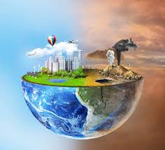
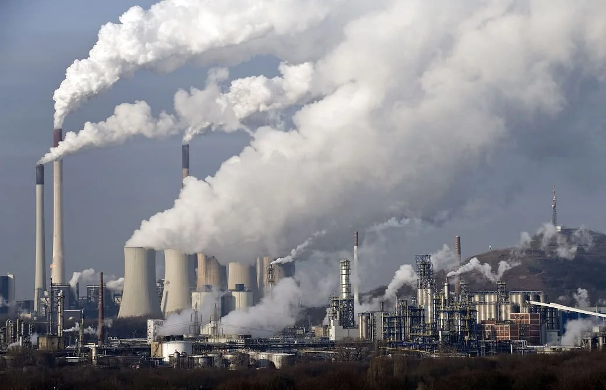

Tema 1: Contaminación.
¿Qué es la contaminación?
La contaminación se refiere a la introducción de sustancias, energía o elementos que alteran negativamente el equilibrio de un entorno natural o artificial.
Estas sustancias, conocidas como contaminantes, pueden ser de origen natural o antropogénico, y su presencia puede afectar la salud humana, la vida silvestre, los ecosistemas y la calidad de vida.
Tipos de Contaminación:
Contaminación atmosférica
Contaminación hídrica
Contaminación del suelo
Contaminación acústica
Contaminación lumínica
Contaminación térmica

Tema 2: Contaminación atmosférica.
La contaminación atmosférica es la emisión de sustancias contaminantes a la atmósfera, procedentes tanto de fuentes naturales como antropogénicas, que puede incidir en la salud de las personas, en la degradación de materiales y en los seres vivos y funcionamiento de los ecosistemas. Los diferentes grupos de sustancias y sus efectos se describen en el apartado de problemática ambiental y contaminantes.



Tipos de Contaminación:
Tema 2: Contaminación atmosférica.